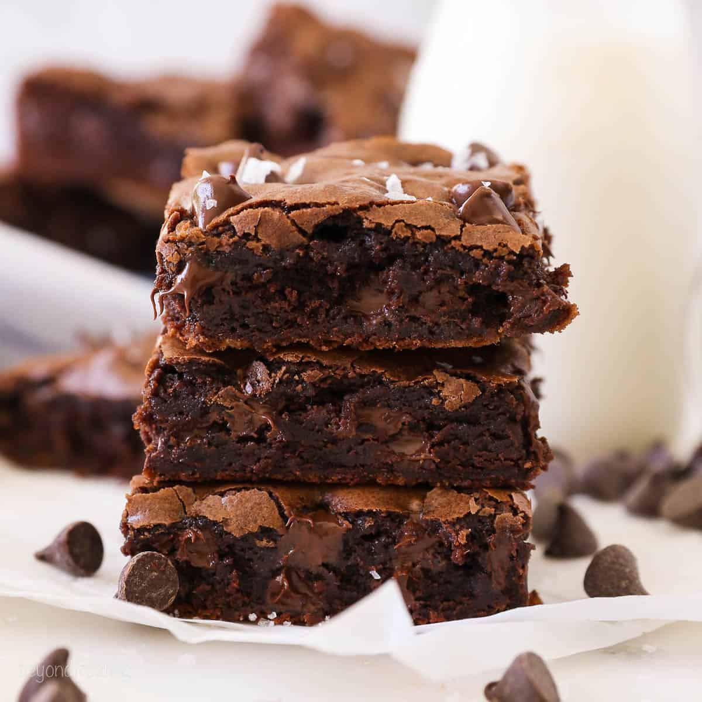

|

Brownies
Indulge in the ultimate comfort dessert with this classic fudge brownie recipe, designed for those who crave a deep, crinkly-top finish and a dense, chewy center. Unlike cake-like brownies, this version balances high-quality cocoa powder with melted bittersweet chocolate to create a rich, complex flavor profile that isn't overly sweet.